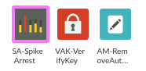
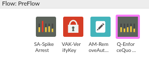
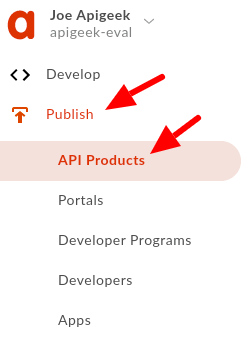
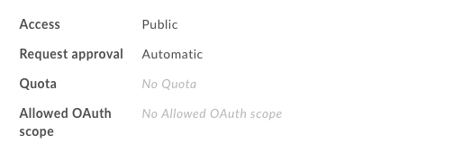
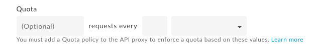
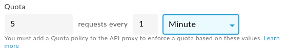
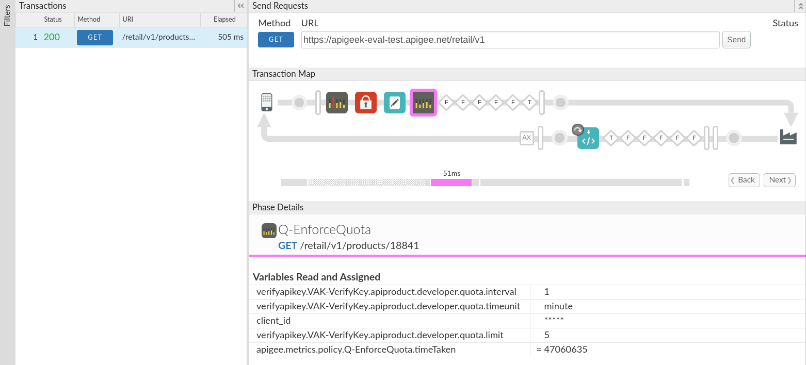

Whenever opening an API to the public it is important to have some safeguards to prevent abuse and potential attacks. We'll cover in this module 2 new policies that will help you control the flow of requests.
What you'll learn
- When and how to use the Spike Arrest policy
- When and how to use the Quota policy
What you'll need
- Your proxy created in the previous lab
Use case
You want to prevent abuse of the system from a business perspective as well as from an infrastructure protection perspective.
Download a working solution to the previous lab as a proxy bundle ZIP file:
Prerequisites:
- Target Server: TS-Retail (instructions in lab 2)
- Product, Developer and App (instructions in lab 3)
- Key Value Map: ProductsKVM (instructions in lab 6)
- Shared Flow: BackendCredentials (instructions in lab 9)
Find your spec ID. When you open your spec in the spec editor, the link will be in this format, with the spec ID at the end of the URL:
https://apigee.com/organizations/YOURORG/specs/folder/FOLDERID/editor/YOURSPECID
Navigate to your proxy and upload the bundle as a new revision:

Select the association.json resource. Replace YOURORG and YOURSPECID with the values from the spec URL.

Once updated, the association.json should look something like this:
{
"url": "/organizations/apigeek-eval/specs/doc/207966/content"
}
Click Save to save your proxy. Open the Deployment menu, and check the deployment status. Click on test to deploy this revision of the proxy.

Test will be green when it is deployed.

- Apply a Spike Arrest policy to prevent a sudden increase in requests
- Apply a Quota policy to our proxy to enforce the quota limits
- Configure quota limits in our product
Back in the proxy, click on PreFlow in the Proxy Endpoint.
Click on the ‘+ Step' button on the request flow to add a Spike Arrest policy named:
SA-SpikeArrest
Overwrite the SpikeArrest configuration:
<SpikeArrest async="false" continueOnError="false" enabled="true" name="SA-SpikeArrest">
<Rate>2pm</Rate>
</SpikeArrest>A Rate of 2pm means that only 2 requests per minute will be allowed. Effectively that means 1 request every 30 seconds, since the policy will smooth the distribution of requests to avoid sudden peaks.
Make sure you drag the policy to be the very first one in the flow.

Save your proxy and test it. Any URL into the proxy should do it, even errors, as this policy is placed as the first one on the PreFlow.
You may notice that as is, it will probably allow more than 2 requests per minute and that is due to the fact that this is not a distributed policy. Every message processor in the infrastructure will create its own timers to distribute the requests.
Let's now add UseEffectiveCount to the policy:
<SpikeArrest async="false" continueOnError="false" enabled="true" name="SA-SpikeArrest">
<Rate>2pm</Rate>
<UseEffectiveCount>true</UseEffectiveCount>
</SpikeArrest>This tells Apigee to take into consideration the number of message processors handling all requests, and to divide the allowed rate between them.
For example, for 2 message processors, and the same 2 per minute configuration, it will mean that each message processor will allow only 1 request per minute.
Save and retest.
Again, in the proxy, click on PreFlow in the Proxy Endpoint.
Click on the ‘+ Step' button on the request flow to add a Quota policy named:
Q-EnforceQuota
Use the following as the XML configuration for the policy:
<Quota async="false" continueOnError="false" enabled="true" name="Q-EnforceQuota" type="calendar">
<Identifier ref="client_id"/>
<Allow count="2" countRef="verifyapikey.VAK-VerifyKey.apiproduct.developer.quota.limit"/>
<Interval ref="verifyapikey.VAK-VerifyKey.apiproduct.developer.quota.interval">1</Interval>
<Distributed>true</Distributed>
<Synchronous>true</Synchronous>
<TimeUnit ref="verifyapikey.VAK-VerifyKey.apiproduct.developer.quota.timeunit">minute</TimeUnit>
<StartTime>2019-01-01 00:00:00</StartTime>
</Quota>Make sure the Verify API Key policy names used in the ref variables. If you have a different name for the Verify API Key policy, you'll need to change it to
VAK-VerifyKey
or change all of the ref variables in the Quota policy. The default values in the policy allow up to 2 transactions per 1 minute. The default will be used if the variables are not set, which should only happen if the quota settings of the product are not enabled.
The quota policy must run after the Verify API Key policy, because the Quota policy is using the variables populated by the Verify API Key policy.

Save and retest.
Let's go back to the product configuration we configured before. Go to ‘Publish/API Products' then select your product.

For now, under the Product details session, you should see something like:

Where Quota is not yet configured.
Click on Edit

And it'll give you access to configure the quota details:

Let's use, 5 per minute:

Retest your proxy and verify if the new quota information is being used. Check for the variables being populated by the Verify API Key policy, and being used by the Quota policy.

You now know how to use quota and spike arrest policies to manage traffic.